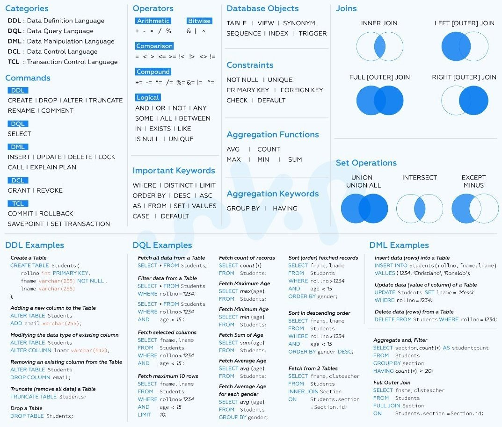
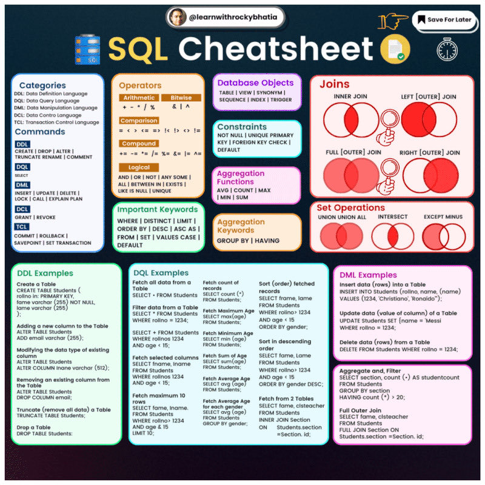

Before we delve into what Database Management and SQL is, let is talk about what Data is.
Data refers to raw facts, observations, measurements, or values that have been collected or recorded. It is the basic building block of information and knowledge. In its raw form, data may not hold any specific meaning or context. However, when processed and analyzed, data can provide valuable insights and help make informed decisions.
Data can take various forms, including:
-
Textual data: Written or typed information, such as articles, documents, emails, and messages.
-
Numeric data: Quantitative information expressed in numbers, such as temperatures, prices, or counts.
-
Categorical data: Data that falls into specific categories or groups, such as colors, product types, or customer segments.
-
Image data: Visual information stored as images or pictures.
-
Audio data: Sound recordings or waveforms.
-
Video data: Moving visual information stored as videos.
Data can be further classified into structured, semi-structured, and unstructured data:
-
Structured data: Data that is well-organized and follows a predefined format. It is typically stored in relational databases and represented as rows and columns. Structured data is easy to query and analyze using SQL.
-
Semi-structured data: Data that does not have a rigid structure like relational databases but contains some level of organization. It may be represented in formats like JSON (JavaScript Object Notation) or XML (eXtensible Markup Language).
-
Unstructured data: Data that has no predefined structure and does not fit into traditional databases easily. Examples include text documents, social media posts, images, videos, and audio files. Analyzing unstructured data often requires more advanced techniques, such as natural language processing (NLP) for text data or computer vision for image data.
Data plays a crucial role in various fields and industries, including business, science, healthcare, finance, marketing, and more. It is the foundation for building machine learning models, conducting research, making predictions, and gaining insights into complex systems and processes.
When data is processed, organized, and presented in a meaningful way, it becomes information that can be used to make informed decisions, identify patterns, and extract knowledge. Effective data management, analysis, and interpretation are essential to harness the full potential of data and unlock its value.
Now that we have a fair idea of what data is we can dive what Database Management and SQL are.
Database Management and SQL (Structured Query Language) are essential components in the field of computer science and data management. They are used to organize, store, retrieve, and manipulate data efficiently and securely. Let's dive into each of them in detail:
Database Management:
-
Data Modeling: In this phase, database designers create a conceptual representation of the data and its relationships. Various techniques like Entity-Relationship (ER) diagrams are used to map out the structure of the database.
-
Database Schema: The database schema is a formal description of the database's structure, defining the tables, their columns, data types, constraints, and relationships between tables.
-
Database Operations:These are the basic functions performed on a database, such as inserting, updating, deleting, and querying data. Database management systems (DBMS) provide an interface to interact with the database using SQL or other programming languages.
-
Data Integrity and Security:Maintaining data integrity ensures that the data remains accurate and consistent throughout its lifecycle. Database administrators implement security measures to protect sensitive information from unauthorized access.
-
Data Backup and RecoveryRegularly backing up the database ensures data is recoverable in case of hardware failures or data corruption.
-
Database Optimization:Database administrators optimize the database's performance by creating indexes, managing query execution plans, and tuning the configuration to improve response times.
-
Database Administration Database administrators (DBAs) are responsible for managing and maintaining the database system, ensuring its availability, security, and performance.
SQL (Structured Query Language):
SQL is a domain-specific language used for managing and manipulating relational databases. It provides a standardized way to interact with the database and perform various operations on the data. SQL is both a declarative and procedural language, meaning that it allows users to specify what they want to achieve without specifying how to do it. The key aspects of SQL include:
-
Data Querying: SQL allows users to retrieve data from one or more tables using the SELECT statement. Users can specify conditions using WHERE clauses to filter data based on specific criteria.
-
Data Manipulation: SQL supports INSERT, UPDATE, and DELETE statements to modify data in the database. These statements help add new records, update existing records, or delete unwanted data.
-
Data Definition: SQL provides statements for creating, altering, and dropping database objects such as tables, views, indexes, and stored procedures. The CREATE, ALTER, and DROP commands are used for these operations.
-
Data Control: SQL includes commands for granting and revoking privileges to users to control access to the database.
-
Data Transactions: SQL supports transaction management using the BEGIN TRANSACTION, COMMIT, and ROLLBACK statements, ensuring data consistency and integrity even in the presence of failures.
-
Joins and Aggregations SQL allows users to combine data from multiple tables using JOIN operations and perform aggregations like SUM, COUNT, AVG, etc., to summarize data.


SQL is supported by almost all major database management systems like MySQL, PostgreSQL, Oracle, SQL Server, SQLite, and others. While the core SQL syntax remains fairly consistent across these systems, there may be slight variations and additional features specific to each database implementation.
In summary, Database Management involves the overall administration and maintenance of databases, while SQL is the language used to interact with databases, perform queries, and manage data within them. Together, they form the foundation for data-driven applications and decision-making in various domains.